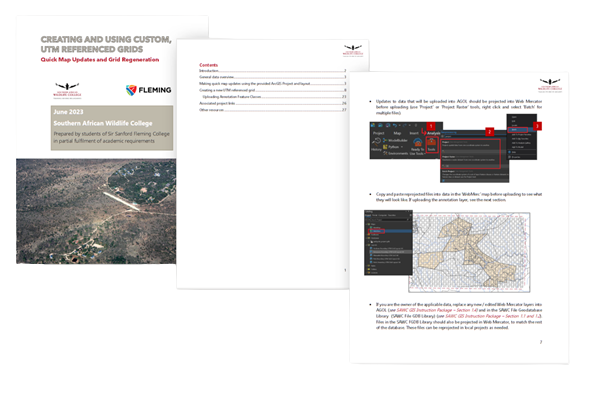
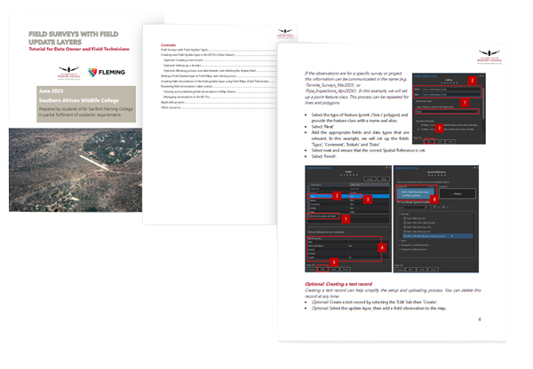
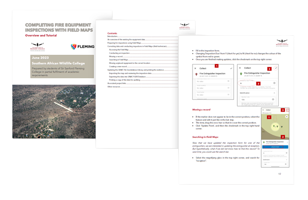

To ensure the success of SAWC’s future geographic information system projects, our team created several GIS instruction packages. The instruction packages will allow the SAWC staff to efficiently maintain the delivered solutions and create similar GIS products themselves.
Instruction Package

Overview
Methodology
To support the client in maintaining each of the delivered solutions, the team created several tutorial-style documents to walk SAWC staff through the basics of creating and modifying relevant GIS items. Each of the instruction packages were created by following the same general workflow, which began by documenting relevant processes involved creating the deliverable solutions, then formatting the documentation into topics and categories, and finally compiling the topics and formatting them accordingly.

General workflow to create the instruction packages.
Results
General GIS Instruction Package
The ‘General GIS Instruction Package’ details numerous processes that are relevant to all GIS users, and covers the work completed in several of the delivered solutions.
Screenshots of the ‘General GIS Instruction Package’. This document has numerous tutorials ranging from the basics of creating a file geodatabase, to incorporating 360 images in ArcGIS StoryMaps.
Custom Referenced Grids
The ‘Creating and Using Custom Reference Grids’ document is relevant to the data owner responsible for updating the grid system feature classes or corresponding products, covered in the Navigation deliverable, which requires a detailed workflow.

Screenshots of the ‘Creating and Using Custom Reference Grids’ document.
Field Surveys and Updates
‘Field Surveys with Field Update Layers’ uses the Critical Infrastructure Asset Management solution in a tutorial for the GIS Data owner and Field technicians for managing observations made in field and is also relevant to audiences interested in using Field Maps to conduct field surveys.

Screenshots of the ‘Field Surveys with Field Update Layers’ document.
Field Maps and Fire Extinguisher Inspections
The final document ‘Completing Fire Equipment Inspections with Field Maps’ is a specific guide intended for operations staff responsible for managing fire equipment inspections, and covers the remaining work required to implement the solution.

Screenshots of the ‘Completing Fire Equipment Inspections with Field Maps’ document.